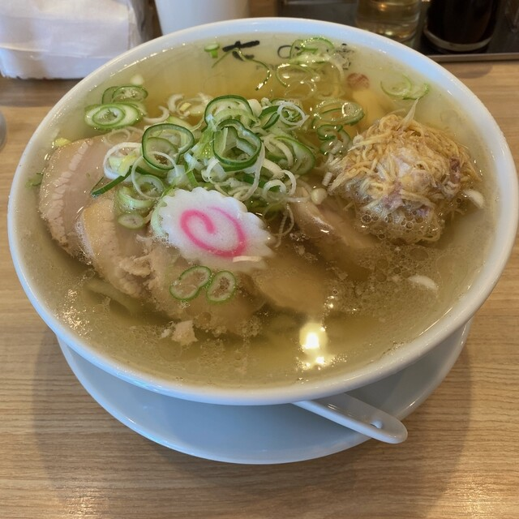
生姜らーめん 980円
当店の看板でございます。SARAH JAPAN MENU AWARD 2024 で二つ星をいただきました。
祝日は日曜と同じ 11:00〜16:00 です
小三郎より
N A N O K U R A
澄んだ湯に、生姜を。
栃木市の「小三郎」で修行し、その味の継承者として認定をいただきました。 以来この古河・下辺見で、澄んだ黄金色のスープと、店で打つ平打ちの麺をお出ししております。
※ご予約は承っておりません。売り切れのご確認はお電話で。はじめての方へ ↓
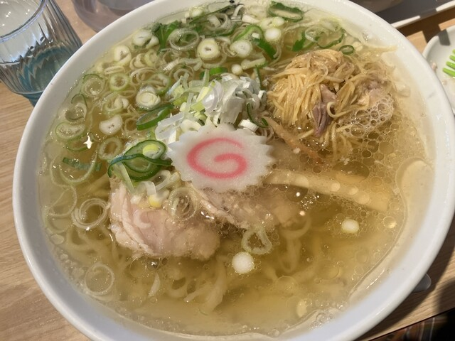
生姜らーめんSARAH JAPAN MENU AWARD 2024 で二つ星をいただきました
当店の生姜らーめんは、栃木市大平町の「小三郎」でお出ししている一杯がもとになっております。 見よう見まねで作ったものではございません。
栃木市大平町「小三郎」
佐野らーめんの流れをくむ、生姜を添えた醤油の一杯。この味を覚えるところから始めました。
スープと、麺と、チャーシューと。
澄んだスープの引き方、平打ちの麺の打ち方、チャーシューの仕込み。ひととおりを、店で身につけました。
「小三郎の味の継承者」として
修行の課程を修めたしるしに、有限会社小三郎より認定証をいただきました。店内に掛けております。
古河市下辺見に、七の庫を開きました。
のれんには「小三郎より」と入れております。どこから来た味なのかを、いつでも申し上げられるようにしております。
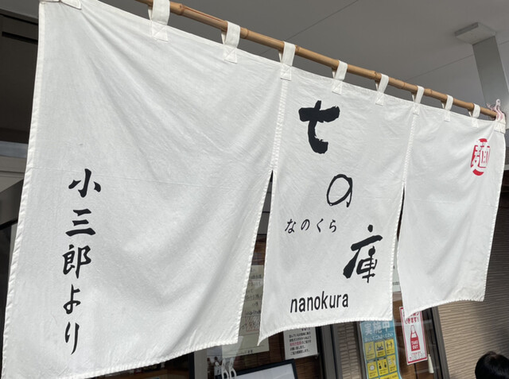
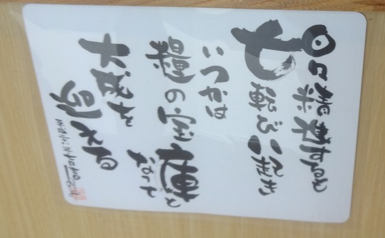
日々精進するも七転び八起き
いつかは糧の宝庫となって大成を迎える
店の名は、この一文から取っております。七度転んだ「七」と、糧の宝庫の「庫」で、七の庫。 店内に掛けておりますので、お待ちのあいだにご覧ください。
スープは、丼の底が見えるまで澄ませてからお出ししております。 生姜はあらかじめ混ぜずに添えておりますので、はじめの数口はそのままで、 途中からお好みで溶かしながら召し上がってください。 どのお品も並・大からお選びいただけます。

当店の看板でございます。SARAH JAPAN MENU AWARD 2024 で二つ星をいただきました。
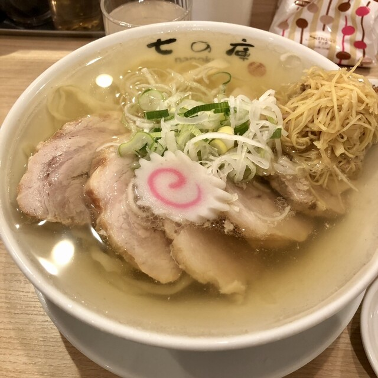
生姜らーめんに、チャーシューを重ねてお出しします。
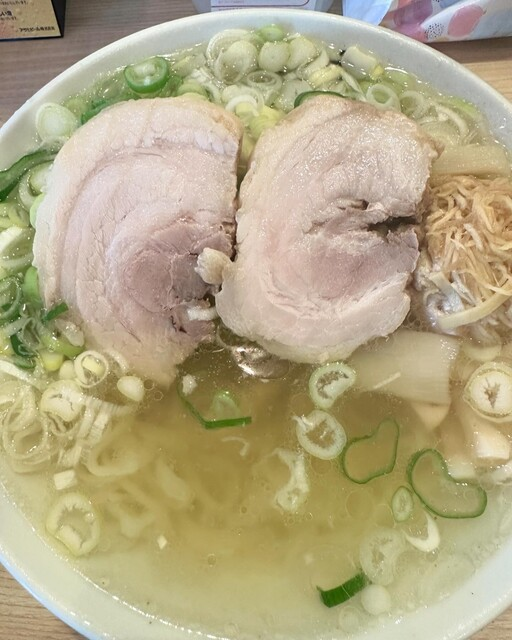
肩ロースをじっくり煮て、厚めに切ってのせております。生姜を入れない、らーめん（880円）もございます。
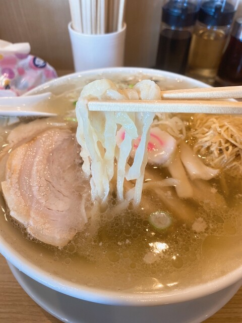
平打ちのちぢれ麺です。太さをあえて揃えずに打っておりますので、一本ごとに歯ざわりが違います。
餃子も店で包んでおります。らーめんと合わせてどうぞ。
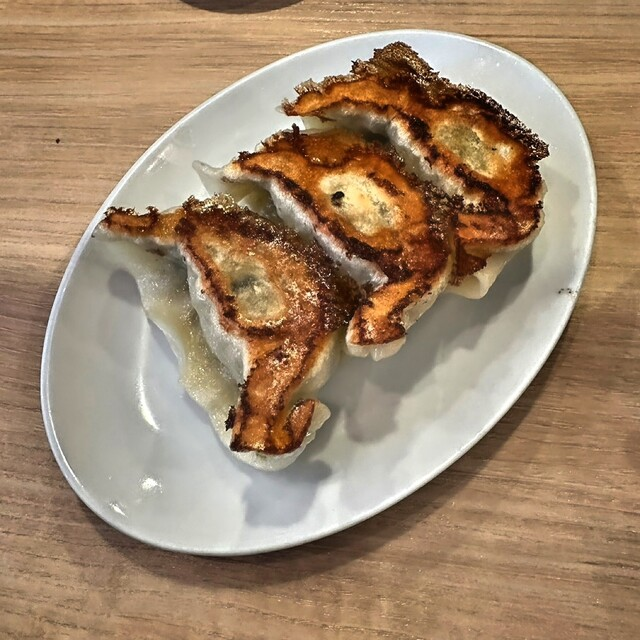
3コもございます。皮は薄めで、羽根をつけて焼き上げます。
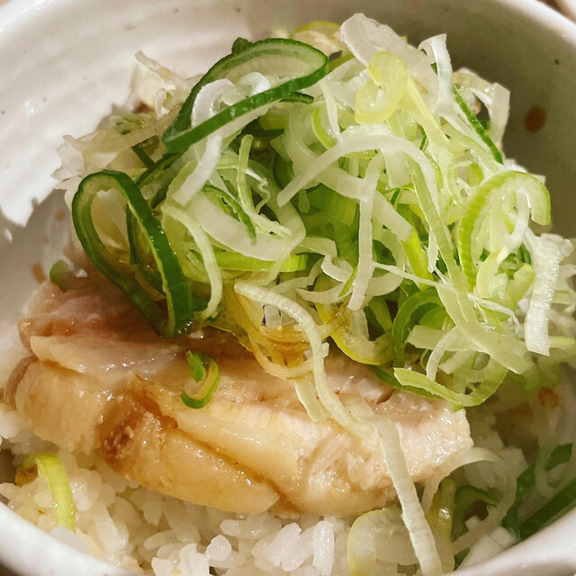
らーめんのおともに。ねぎを多めにのせております。
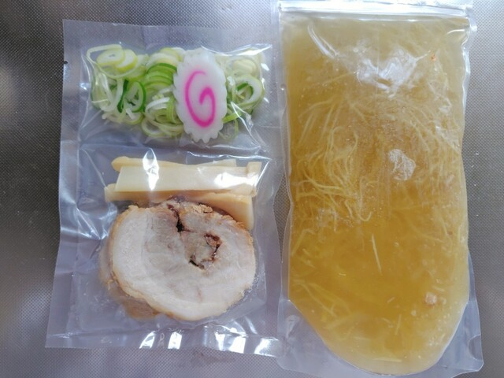
生麺とスープを袋に詰めて、お持ち帰りいただけます。餃子は焼・生・冷凍をご用意しております。 お帰りの際にお声がけください。
お待たせしてしまうことがございます。ご案内のしかたを先にお伝えしておきます。
混雑時は、店内カウンターの上にウェイティングシートをご用意しております。お名前と人数をお書きになってお待ちください。
お呼びしたときにご不在ですと、次の方をご案内することになってしまいます。代表の方お一人はお近くでお待ちください。お車でお待ちの方は、お呼び出しの直前にお降りください。
閉店時刻より前に終わる日がございます。遠方からお越しの際は、あらかじめお電話でお確かめください。
当店専用の区画と、共用の区画がございます。 隣の「からあげ寺田商店」様専用の区画（5台分）には、駐車をご遠慮ください。 お支払いは現金のみでお願いしております。ポイントカードもございますので、よろしければお申し付けください。
カウンターとテーブル席がございます。全席禁煙です。おひとりでも、お子様連れでもお立ち寄りください。 お子様らーめんもご用意しております。
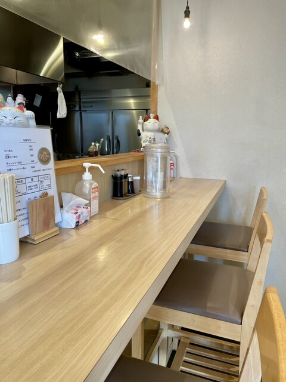
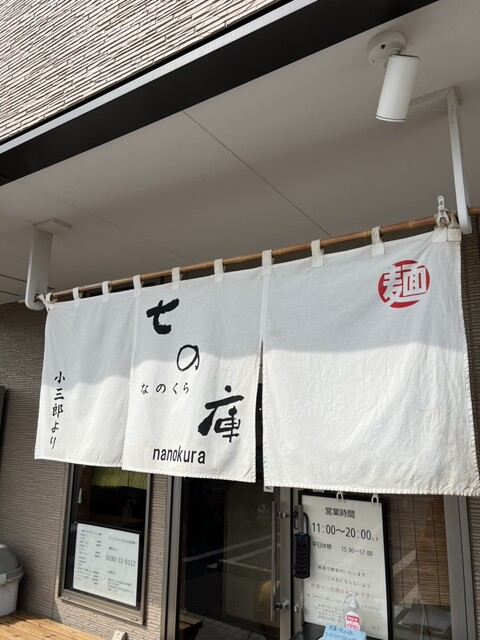
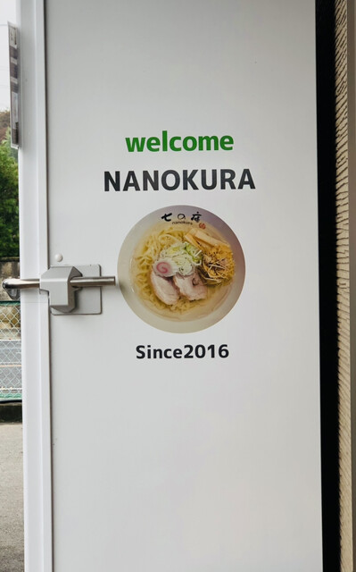
澄み切った透き通るようなスープ。
お客様の声より
七の庫さんは味は抜群ですが接客も良い。
お客様の声より
平均週1で食べに来てます。7年程前から食べに来ていて、初めて食べた時はチャーシューが衝撃的に美味しかった。
お客様の声より
道路沿いに白い袖看板が立っております。これが目印です。
| 住所 | 〒306-0235 茨城県古河市下辺見2235-1 |
|---|---|
| 電話 | 0280-32-8112 |
| 営業時間 |
平 日 11:00〜15:00／17:00〜20:00 土 曜 11:00〜20:00（通し） 日・祝 11:00〜16:00 ※麺・スープがなくなり次第、終了いたします |
| 定休日 | 月曜日（月曜が祝日の場合は翌日） |
| お席 | カウンター席・テーブル席／全席禁煙 |
| 駐車場 | あり（当店専用の区画と共用の区画） 隣の「からあげ寺田商店」様専用の区画にはご遠慮ください |
| お支払い | 現金のみ |
| ご予約 | 承っておりません。順番にご案内いたします |
お品書きの内容とお値段は、変更になる場合がございます。
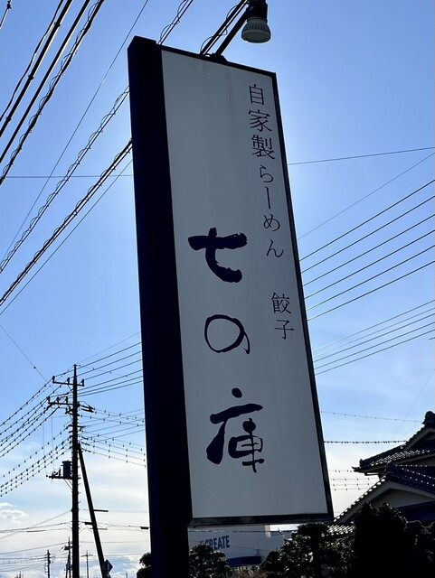
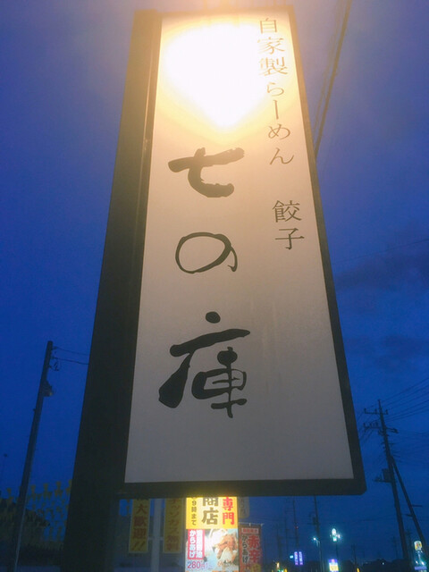